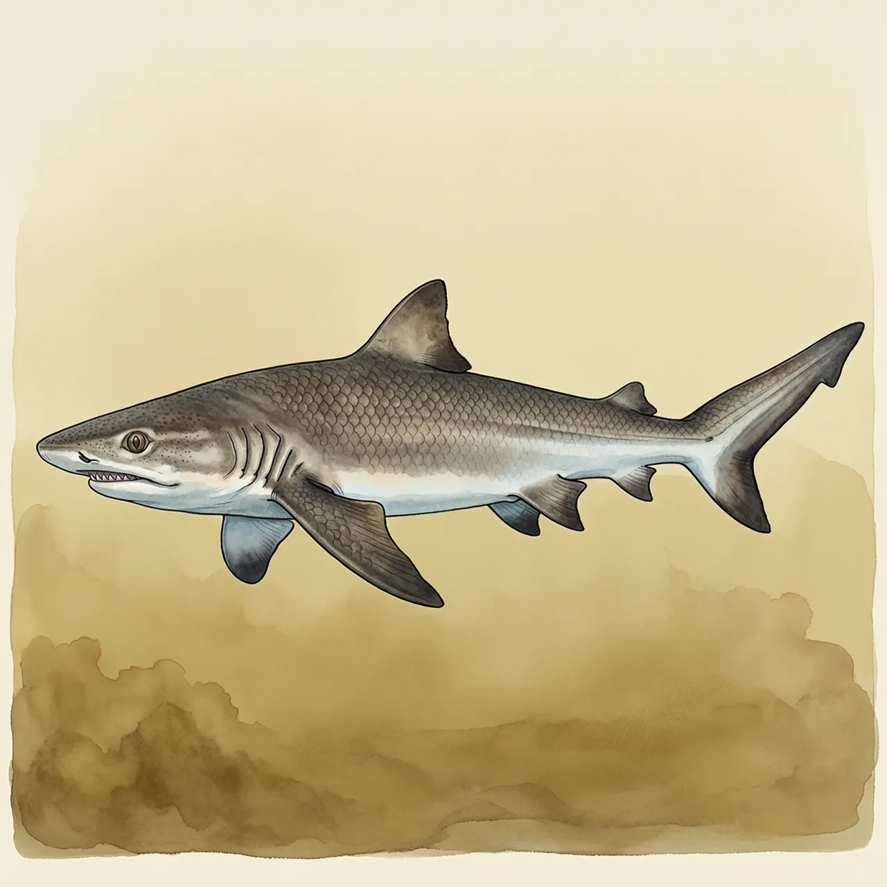
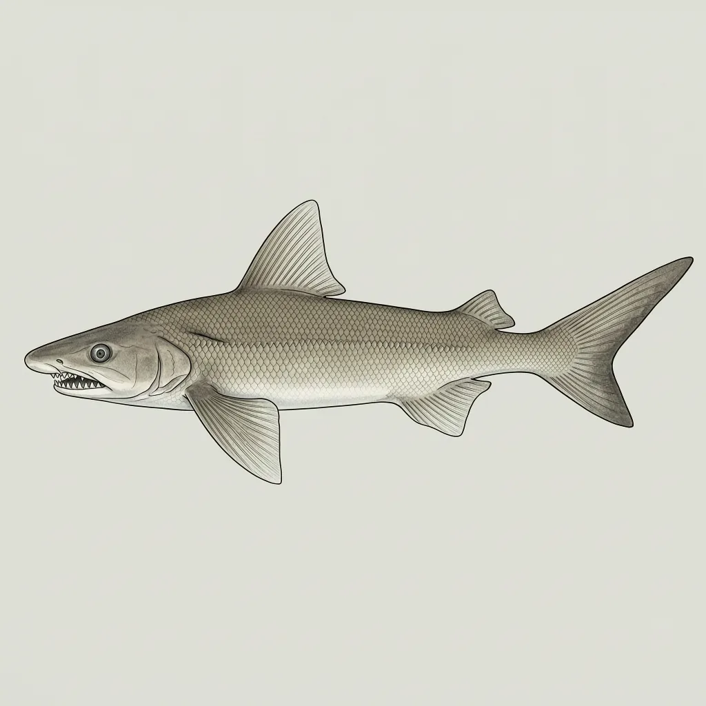

恒河露齿鲨是真鲨科露齿鲨属的极危物种，见于印度与孟加拉的恒河、布拉马普特拉河和博多河流域。它眼睛极小、体色灰褐无花纹，被认为能一生待在淡水中；常被误认的牛鲨虽也入河，却必须回到海里繁殖。自1839年命名以来，它已知标本极少，研究数据缺乏。
浑浊的河水里，一条灰褐色、眼睛很小的鲨游过，身上没有任何花纹。恒河露齿鲨的已知记录都来自这类水域：印度与孟加拉境内的恒河、布拉马普特拉河与博多河流域，模式产地在印度恒河。它的眼小到可能就是为适应浑浊水体而退化；和别的鲨鱼一样，它保留着一层能盖住眼睛的瞬膜。
恒河露齿鲨的活法，关键在一处：不必回海。它和露齿鲨、北河露齿鲨这两个近亲一起，被划进「真正的淡水鲨」的小圈子，一生可以留在河里；而常被混称的牛鲨虽然也深入江河，繁殖时仍必须游回海里。至于恒河露齿鲨自己怎么繁殖、吃什么，现有资料给不出答案。它的外形也没留下更多线索：两个无棘的背鳍、宽大的胸鳍，第二背鳍高约第一背鳍的一半，此外是一条标准模样的真鲨。
最反直觉的一点藏在一次张冠李戴里：很多旧记录里「恒河里的鲨」其实是入河的牛鲨。把两者分开之后，真正以这条河命名的恒河露齿鲨反而成了最不像已知动物的一种——1839年命名以来，它只有极少可核对的标本，活体几乎无人亲眼确认，极危评级里有一半是无知的坦白。它的异名名单就是注脚：Carcharias gangeticus、Carcharhinus gangeticus、Carcharias murrayi，三个名字，挂的都是同一条几乎没人看清的鱼。
